BIOLOGY - IX
y Diversity in movement y Muscles and exercise y Muscles y Bones, muscles-disorders y Skeletal system y Bones and evolution y Different frameworks y Plant movements 87

BIOLOGY - IX
y Diversity in movement y Muscles and exercise y Muscles y Bones, muscles-disorders y Skeletal system y Bones and evolution y Different frameworks y Plant movements 87

BIOLOGY - IX
പ്രകൃതിയിൽ കാണപ്പെടുന്ന ബാക്ടീരിയയും ലാബിൽ നിർമ്മിക്കപ്പെട്ട ബാക്ടീരിയയും തമ്മിലുള്ള സാങ്കല്പിക സംഭാഷണമാണ് മുകളിൽ കൊ�ൊടുത്തിരിക്കുന്നത്. ശാസ്ത്രലോ�ോകത്ത് സംഭവിച്ച വിസ്മയകരമായ മുന്നേറ്റം ആയിരുന്നു കൃത്രിമ ബാക്ടീരിയയുടെ സൃഷ്ടി. അതോ�ോടെ ജീവന്റെ താക്്കകോലും ശാസ്ത്രത്തിന്റെ കൈവശമായി.
88

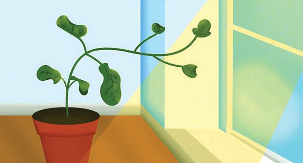
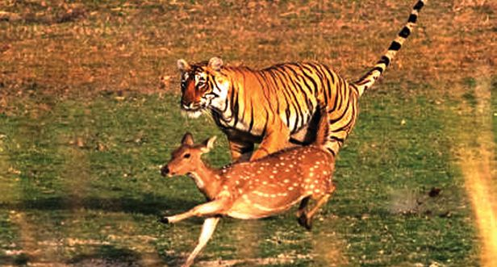
BIOLOGY - IX
Observe the picture. “ How beautiful is this green earth! ” The Earth is made colourful by plants, animals and countless microorganisms that cannot be seen with our naked eyes. Don't these creatures make our world beautiful and dynamic, with many of their activities like procuring food, etc.? What all types of movements can be observed in the organisms in the picture?
.............................................................................................................................................. .............................................................................................................................................. Don’t such movements require energy? Most of the energy produced in the body is utilised by animals for movement. Therefore, animals require more energy compared to plants. Observe illustration 4.1 and note down the importance of movement in each organism.
Illustration 4.1 : Different types of movements y Food acquisition in amoeba
y y y List out other kinds of movements that you are familiar with. .............................................................................................................................................. .............................................................................................................................................. 89
BIOLOGY - IX
Haven’t you understood that different organisms have adapted various types of movements to meet their diverse needs? Various movements, both visible and invisible to the naked eye, as well as diverse adaptations for movement are seen in the living world. Analyse the illustration 4.2 based on the indicators and note down the inferences regarding the diverse movements in the living world. Movements in the Living World
Microorganisms
Animals
Plants
Movements using flagella in bacteria, pseudopodia in amoeba, and cilia in paramecium are examples of diversity of movements in various microorganisms.
In animals, movement refers to a change in a part of the body, or position of the body with respect to the surroundings. The movement of sperms, peristalsis, heart beat circulation of blood, walking, running, jumping, etc., are examples.
Various types of movements are there in plants, even though plants do not move from place to place. Seed germination and change in parts of the plants according to stimuli are examples of plant movements.
Common Movements
Illustration 4.2 : Movements in the living world • Movement in plants • Movement in animals • Common movements • Microscopic and macroscopic movements Haven’t you understood that there is great diversity in movements among organisms? There are different means in organisms which support these movements. 90


BIOLOGY - IX
Identify the means of movement of the organisms shown in the illustration 4.3 and complete it.
Paramecium
Euglena
Fish
Frog
Whale
Bird
Illustration 4.3 : Means of movement in organisms Expand Table 4.1 by including more organisms as given above. Organisms
Means of movement
Bacteria Amoeba Hydra
Table 4.1 : Means of movement in different organisms 91
BIOLOGY - IX
Haven’t you understood the means of movement in different organisms? How does movement occur in humans? What are the means involved? Discuss, collect more information and complete the illustration 4.4.
Body Movements
Cytoplasmic streaming
Pseudopodial movements
Helps to distribute substances throughout the cytoplasm
Pseudopodia in the white blood cells help in locomotion and defence
Flagellar movement .......................................................
Ciliary movement
.......................................................
.......................................................
.......................................................
.......................................................
......................................................
Muscular movement Contraction and relaxation of the muscles help in different movements. Illustration 4.4 : Movement and means of movement in human beings The diversity of movements and locomotion in humans is caused by the functioning of muscles. Which characteristic of muscles helps in movement? Analyse the description provided and form inferences.
92


BIOLOGY - IX
Muscle tissue
Muscles are specialised tissues which are responsible for the movements of the body. There are various types of muscles in the body. These are formed of muscle cells. Muscle cells contain nucleus and almost all cell organelles. However, unlike other cells, they contain more micro filaments made of proteins such as Actin and Myosin. By the action of these filaments, muscles contract and relax. This enables the body movements.
Protein filaments Actin
Myosin
• Characteristics of muscle tissues • Proteins in muscle cells and their importance You have understood the various types of muscles in the human body. Analyse the illustration 4.5, do the given activity and complete table 4.2.
93
How does Actin and Myosin help in the contraction of muscles? Find out.


BIOLOGY - IX
Smooth muscle
Skeletal muscle
Cardiac muscle
Illustration 4.5 : Different types of muscles You have observed the illustration. Observe the permanent slide of the muscles through a microscope in the laboratory.
Let’s observe the muscles To identify the minute characteristics of various muscles, observe the permanent slides of muscle tissues at different magnifications through a microscope. Illustrate your observations. Compare this with the illustration 4.5 and form inferences.
94

Muscles attached to the bones
Muscles in the hollow internal organs
BIOLOGY - IX
Muscles in the walls of the heart
Name of the muscle Shape of the cells Presence of striations Branches Control of the muscles according to one’s will.
Table 4.2 : Different types of muscles Some muscles in our body that can be controlled (voluntary muscles) and some others cannot be controlled (involuntary) according to our will. In which all parts of the body are each one of these found? Find out examples through discussion and note them down in the table provided. Voluntary muscles
Involuntary muscles
y Muscles in the hands y Muscles in the oesophagus y y
Table 4.3 : Voluntary and Involuntary Muscles You know that folding and stretching of hands is a voluntary action. How does this movement take place? Two muscles are mainly involved in this process. By folding and stretching your hands and analysing the illustration 4.6, understand the contraction and relaxation of muscles. Discuss on the basis of indicators and prepare notes. 95
e How is th f action o ry involunta muscles d? controlle Find out.


BIOLOGY - IX
Tendon Flexor muscle Extensor muscle Bones
Illustration 4.6 : Movement of hands • The part that connects muscles to bones. • Muscles involved in the movement of hands. • The importance of connecting the two tips of the muscles to two bones. • The change that should occur to the two muscles in order to fold the hands. • The changes that should occur to the two muscles in order to stretch the hands. The antagonistic actions of the two muscles make the folding and stretching of hands possible. Most of the movements in the body are made possible with such actions of the muscles.
Muscle fatigue While engaging in physical activities, muscles need to function continuously. This requires a lot of energy. You have understood that ATP is formed in muscles in the presence of oxygen due to cellular respiration. Muscles function, receiving energy from ATP molecules. When skeletal muscles have to function continuously (e.g. during exercise), if required oxygen is not available, muscles become weak and they may temporarily lose the capacity to contract. This condition is called Muscle Fatigue. What would be the reasons for this? Find out.
96

BIOLOGY - IX
Is movement possible solely by the action of muscles? Note down your assumption.
.............................................................................................................................................. In human beings, muscles are connected to either bones or to cartilages. Diversity of movements are made possible due to the combined action of muscles and bones. Observing the skeleton in your school lab, and analysing the illustration 4.7 develop an understanding of the two divisions in the human skeletal system. Label the parts and complete the illustration. Prepare notes based on the indicators.
Human skeleton Axial skeleton
Appendicular skeleton
It consists of the bones seen in the central axis of the body.
It consists of the bones which are connected to the central axis.
Skull
- 29
Pectoral girdle - 4
Sternum
-
Pelvic girdle
-
Ribs
-
Forelimb
-
Vertebral column -
Hindlimb
-
Illustration 4.7 : Human skeleton 97


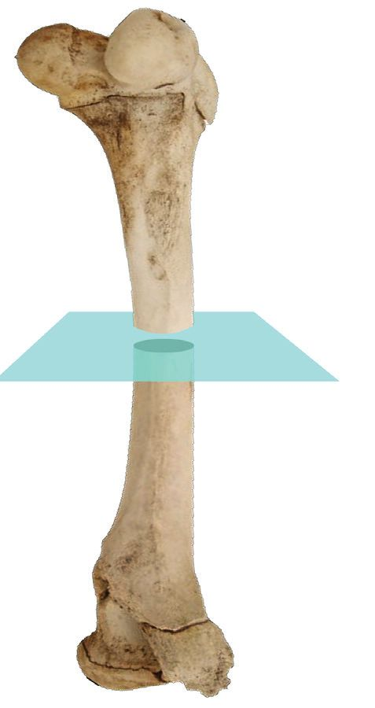
BIOLOGY - IX
mber of u n e h t Is ame in bones s and children ? adults the What is reason? t. Find ou
• Two divisions of human skeleton • Total number of bones • Number of bones in the axial skeleton and appendicular skeleton You have understood the position and the number of bones in each part of the skeleton. What are the structural peculiarities of bones? Analyse the description given below based on the indicators and prepare a note.
Structure of bone Periostium Blood vessels
Bones constitute 18 percent of the human body weight. Bones provide structure, support and protection to the body. Periostium is the membrane that covers each bone. Blood vessels, nerves and lymph vessels are found in bones. Calcium, phosphate, collagen proteins and salts provide hardness and strength to bones. Osteoblast cells of bones deposit minerals in the bones, make them strong and firm and also help in growth and repair.
• Hardness of bones • Function of osteoblast cells
98


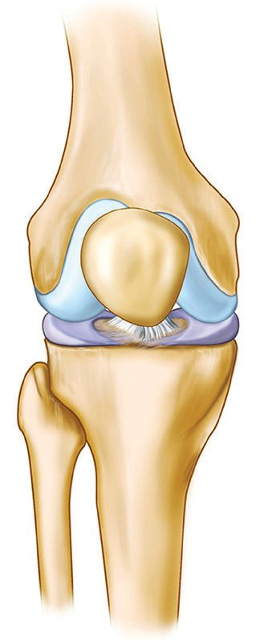
Muscles are connected either to bones or to cartilages. What is the difference between bones and cartilages?
Analyse the information provided and find out the answer to the child’s doubt. Do all living organisms have a skeletal framework like that of humans? Observe the figure 4.1 and based on the discussion, form inferences.
Grasshopper
BIOLOGY - IX
Cartilage Cartilage is the connective tissue which is softer and more flexible than bones. These are present in elbows, knees, ankles, at the tip of ribs, between the vertebrae of the vertebral column, pinna, at the tip of the nose and in the trachea. Cartilages present at the tip of the bones reduce friction in the joints. Blood vessels and nerves are absent in them. Due to the absence of blood vessels their growth is slower than the rest of the cells.
Crab
Figure 4.1 : Structural frameworks of various organisms You have understood that all organisms do not have skeletal framework (Endoskeleton) like humans beings. The structural framework is different in each of these organisms. Analyse the description and complete illustration 4.8. 99
Earthworm
BIOLOGY - IX
Diversity in the Structural Framework
Hydroskeleton Fluid filled chambers are present in the body of the earth worm. Here, water is the means to maintain body structure and locomotion. This mechanism is commonly called hydroskeleton. Hydroskeleton helps in the movements of hydra and snail. Exoskeleton Hard shells present in crabs, mussels and oysters which is made mainly of calcium carbonate, and the outer covering of grasshoppers and cockroaches which is made of chitin, are exoskeleton. These connect muscles in respective places and help in movement, locomotion and protection of the body. Endoskeleton Vertebrates including human beings have a framework made of cartilages and bones. This mechanism which provides shape to the body, protects internal organs and helps in movement and locomotion is called endoskeleton. Structural Framework of the Body
Hydroskeleton
Exoskeleton
y
Endoskeleton y
Characteristics
examples
Illustration 4.8 : Diversity in structural framework Are there parts of exoskeleton in organisms with endoskeleton? Discuss and find out. 100


Collect the exoskeleton and endoskeleton of various organisms and organise an exhibition in the Science Lab.
Joints The bones are connected to each other by joints. Connecting the bones in this way makes movement easier. The skeletal joints have some peculiarities. Analyse the illustration 4.9 and the given hints, prepare a note on the structure of a joint.
BIOLOGY - IX
ganisms Some or having ton exoskele ir outer shed the . Why? covering . Find out
Ligament Capsule Cartilage Synovial membrane Synovial fluid Bone
Illustration 4.9 : Structure of a Joint
Ligaments are found connecting two bones. The capsule seen inside this helps in the smooth movement of bones. Cartilage is found covering the tip of each bone. This reduces friction between the bones. Synovial flluid is the fluid present between the two bones of a joint. This also reduces friction between the bones. Synovial fluid is produced by the synovial cells of the synovial membrane. Are all the joints in the body alike? Joints differ according to their function. You have studied different types of joints in the body. Analyse the figure of the joints and complete the Table 4.4. 101


BIOLOGY - IX
Name
Different Types of Joints
Ball and Socket joint Hinge Joint Pivot Joint Gliding Joint
Peculiarities Position Table 4.4 : Different types of Joints Collect more information about joints in different parts of the body. Prepare a chart and exhibit it in the class.
Body growth and Bone Development Growth during childhood and adolescence is associated with the development of the skeletal system. It is essential that calcium should deposit in the bones to ensure their hardness and strength. Food rich in calcium such as dairy products (milk, yogurt, butter), fish and leafy vegetables should be consumed in abundance at this stage. Vitamin D is necessary for the absorption of calcium. For the natural production of vitamin D in the skin, engage in activities that expose us to sunlight. Egg and fishes like sardines, mackerel, etc., are rich sources of Vitamin D. Since protein is essential for bone development, meat, beans, peas etc can be abundantly included in the diet. As age advances, the density of bones decreases, making them weaker and more prone to fracture. Nutritious diet plays a crucial role in preventing the degradation of bones.
How does the deficiency of vitamin D affect the body? Find out.
You have understood that the combined action of muscles and bones enables body movement. What are the other functions of bones? Discuss and expand the list. • Formation of blood cells • • •
y 102


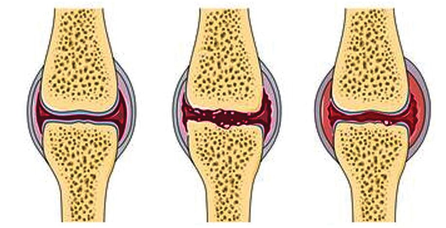
BIOLOGY - IX
Muscles and Exercise We can ensure the active functioning of muscle cells through movement. Exercise helps to strengthen muscles and increase their efficiency. In what all ways is exercise beneficial for the body? Examine the activity book of health and physical education, discuss and complete the table 4.5. Part of the body
The Benefits of Exercise Vital capacity increases, gaseous exchange becomes efficient
Lungs Hands and legs Muscles, bones Heart and blood vessels
Table 4.5 : The benefits of exercise
Disorders of Bones and Muscles Continuous and excessive muscle activity will adversely affect the functioning of muscles. Bones are prone to injuries just like muscles. Analyse the description and complete the table 4.6 on the disorders of bones and muscles.
Osteoporosis This is a condition in which parts of bones get damaged and the density of bones deteriorates as they become porous. The deficiency of protein, calcium and vitamin D also leads to this disease.
Rheumatoid arthritis In some people the immune system may destroy their cartilages and synovial membrane. This causes severe pain and swelling in the joints. This disorder is found more in women than men. Why is this disorder more in women than men? Find out. 103
Vital Capacity The total volume of air exhaled forcefully after a deep inhalation is called vital capacity. This is the maximum amount of air a person can breathe. This is the measurement of a person's respiratory health. In men, it is approximately 4.5 litres, and in women, it is 3 litres. A decrease in vital capacity may be an indication of pulmonary diseases.


BIOLOGY - IX
Muscular dystrophy This is a condition in which muscles get damaged due to various reasons. Muscles become weak. This is often seen in boys. The change that occurs in the genes is the chief reason for this.
Sprain A sprain is an injury which is caused by the stretching or breaking of ligaments which connect the bones in a joint. This usually affects the joints in the ankle, wrist, knees, etc. Pain, swelling, bruises, difficulty in moving the joints, etc., are the symptoms of sprain. Disease
Causes
Symptoms
Table 4.6 : Various bone and muscular disorders
Disc Prolapse Vertebral column is the part that gives protection to the spinal cord along with support to the body. Each bone in the vertebral column is called vertebra. A peculiar part called intervertebral disc, which is filled with a gel-like substance is found in between two vertebrae. They provide flexibility to the vertebral column and protects it from external shocks. It is the presence of the intervertebral disc that enables us to be involved in such activities like bending and straightening up. These discs also distribute the body weight equally through out the vertebral column. The wearing of the vertebrae, sudden shock and continuous strain on the vertebral column can cause the bulging out of the gel-like part inside the intervertebral disc. This condition is called disc prolapse. As this bulging causes pressure in the spinal nerves, it results in numbness and pain in the body parts. If it aggravates, it will cause severe back pain, weakening of the legs and a loss of sensation. This situation requires immediate medical aid. 104

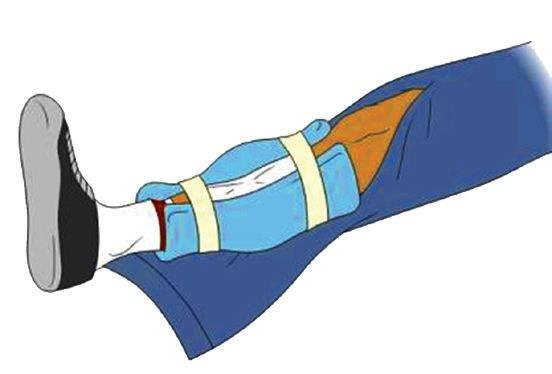
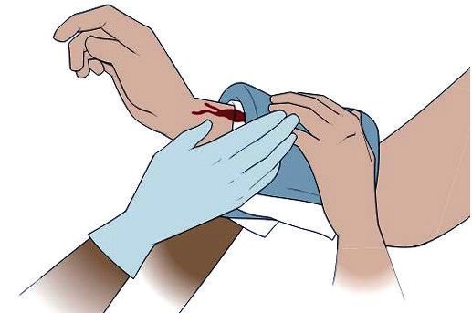

Have you understood the first aid measures to be given when bones and muscles become injured? Identify the situations in which the first aid measures shown in the pictures are used and complete the illustration 4.10.
Sling .............................................. ..............................................
Splint .............................................. ..............................................
Bandage .............................................. ..............................................
Illustration 4.10 : First aid measures Organise an awarness class by a health expert about the first aid measures in cordination with the Health Club. Get a hands-on training on the first aid measures given. y How to prepare a sling y How to use a splint y How to prevent blood loss when a wound occurs y The use of bandage and band-aid y First aid to be given when there is a spinal injury
Medical Imaging Technology X ray technology has been widely used for the accurate detection of fracture, dislocations, tumours and other bone damages. Ultrasound scanning, Magnetic Resonance Imaging (MRI) and Computed Tomography (C.T.Scan) are latest techniques for diagnosis. This field of medical science is known as Medical Imaging Technology. Courses on Medical Imaging Technology provide attractive job opportunities to interested students. 105
BIOLOGY - IX
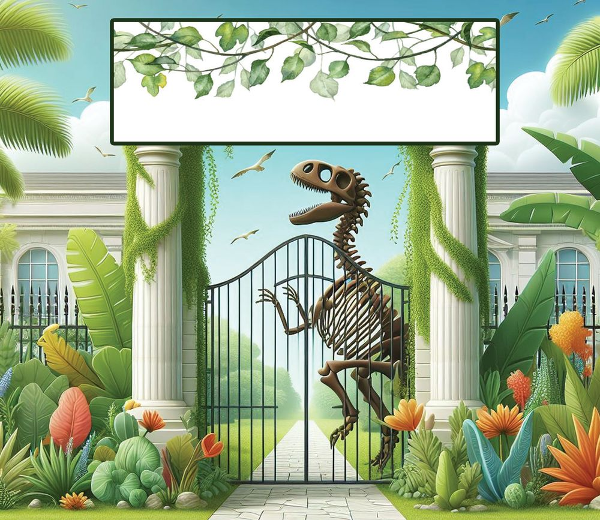
BIOLOGY - IX
“Come, let us see and study the path of evolution of life through fossils and skeletons”.
Didn’t you notice what is written at the entrance of the museum? Analyse the following excerpt from a science article to determine if the development of the structural framework of the body is sufficient to understand evolution.
Bones and Evolution The study on the framework of organisms give, several evidences for the scientific concept that all living beings have involved sequentially. The hydroskeleton helps in the movement of organisms like jellyfish, earthworms, etc. Organisms like crabs and mussels having exoskeleton also appeared gradually along with these organisms. Later, vertebrate organisms with endoskeleton evolved. Endoskeleton provided more flexibility and movement and also supported their large bodies. Bipedal walking is an important phase in human evolution. Such changes in the skeletal system helped human beings to travel long distances and find suitable habitat, thus helping in the expansion of human race. 106
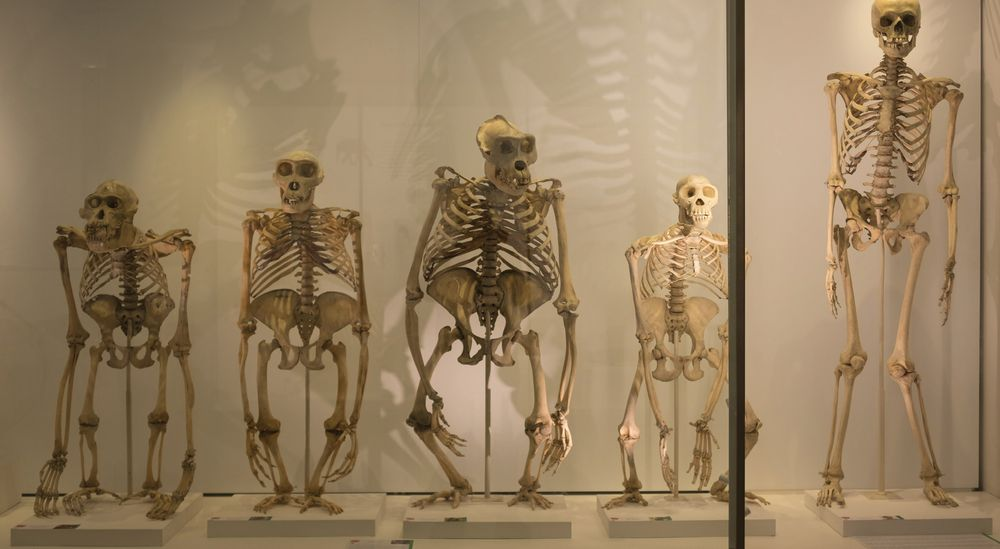

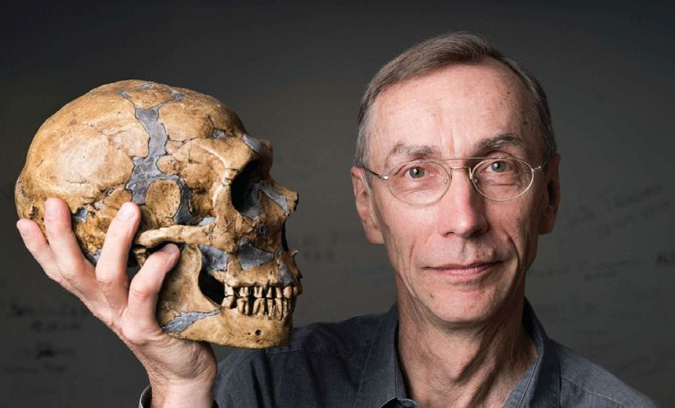
Where do the human beings come from? How are we related to hominins who became extinct?
BIOLOGY - IX
Life history from Bones
analysis rather than The scientific concept assumptions or that provides a speculations. The comprehensive process of evolution explanation about the of life helps in formation of the identifying the diversity of life that Swante Pabo importance of evolved on Earth over scientific inquiry in revealing the millions of years is called evolution mysteries of nature and the role of of life. The picture of evolution of life science in formulating inferences is made up of many evidences from based on evidences. various spheres such as genetics, embryology and palaeontology or The Swedish evolutionary geneticist the study of fossils. The study of Swante Pabo analysed DNA extracted fossils is an effective means of study from the ancient piece of bone and that sheds light into the past. made crucial discoveries about the The study of fossils ranging from genetic similarities and differences simple structured bacteria to the between human ancestors and modern complex structured organisms man. With the help of modern including dinosaurs and mammals technology which retrieves and tells the story of the dynamic nature analyses DNA from fossils, he laid the of life. The study including fossils foundation for the branch of science helps to explain scientifically the called Paleogenomics. He was evolutionary interrelationship of all awarded the Nobel Prize in 2022 for living organisms based on his latest discoveries in the genome of observation, evidence, and scientific the extinct hominins and about human evolution.
107
BIOLOGY - IX
Movements in Plants You know that there is movement not only in animals but also in plants. Plant movements occur according to stimuli. The internal or external instigation that evokes a response in living organisms is called a stimulus. Light, water, gravity, touch, chemical substances, etc. are stimuli that cause plant movements. Analyse figure 4.2, discuss and find out the various plant movements and the stimuli that cause movements in plants.
Figure 4.2 : Plant movements Are all the plant movements that you have listed related to the direction of stimulus? Discuss. Analyse illustration 4.11 and examine the validity of your findings. Plant movements
Tropic movement Movement according to the direction of stimulus
Nastic movement Movement not according to the direction of stimulus
Illustration 4.11 : Plant movements 108
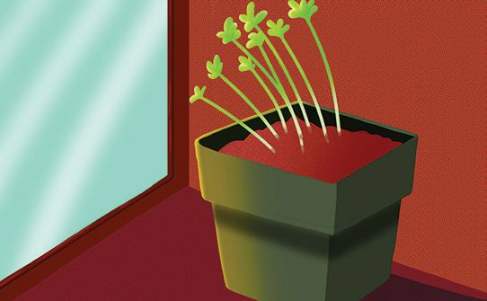
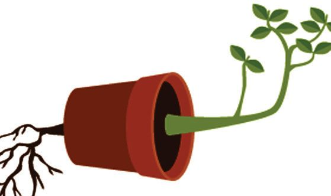

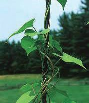

Analyse illustration 4.12, identify how the movement of the shoot and root are related to the direction of stimulus and complete table 4.7.
Phototropism
Geotropism
BIOLOGY - IX
Hydrotropism
Illustration 4.12 : Tropic movements Plant movements
Stimulus
Phototropism
Direction of movement of the shoot
Geotropism Hydrotropism Table 4.7 : Tropic movements Two other tropic movements found in plants are given in illustration 4.13. Find out the characteristics of these and record them in the science diary.
Haptotropism
Chemotropism
Illustration 4.13 : Other tropic movements 109
Direction of movement of the root

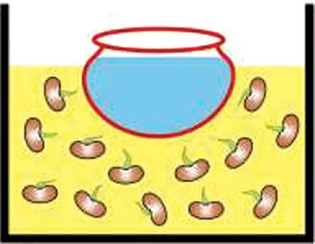

BIOLOGY - IX
Arrange saw dust and an earthen pot filled with water, in a box as shown in the figure. Place some gram seeds at different parts of the box. Take the pot out carefully after a few days. Observe the direction of growth of the roots. Observation : ......................................................................................................... Inference
: ......................................................................................................... Have you ever touched a Touch-me-not plant? How is the movement of the leaves of a Touch me not plant? Which type of movement is this? What is the peculiarity of such movements? Such type of movements are called as nastic movements. List out more examples for nastic movements. • •
Adaptations of organisms for their existence ranges from the movement of molecules in the cells to the various movements of organisms. Knowledge about these not only reveals the wonders in the diversity of movements of the living world, but also gives insight into the evolution of life. Evolution helps organisms to adapt themselves to the changing environment. Society also should undergo transformative movements in order to face problems which keep arising continuously. These movements help us to survive, progress and to follow a more just world.
110

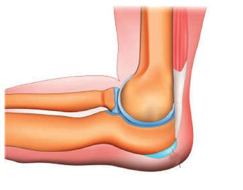
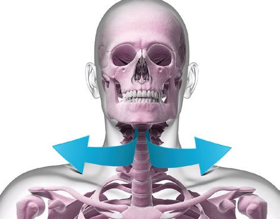

BIOLOGY - IX
Let us Assess 1. Identify the plant movement mentioned in each of those given below. (a) The pea plant twines around a support (b) The coconut tree near the bank of a river grows leaning towards the river. (c) The pollen tube grows towards the ovary. (d) The leaf of Touch-me-not plant folds while touching. 2. Identify the disease mentioned in the statement given below. In some people certain cells of the immune system may destroy the cartilages and synovial membrane. 3.
Identify the muscle from the peculiarities given below. - Cells with single nucleus. - Spindle shaped cells
4.
Observe the joints denoted as X, Y, Z and choose the one which comes in the correct order. X
Y
Z
X Y a) Ball and Socket Gliding joint joint
Z Pivot joint
b) Pivot joint
Ball and Socket joint
Hinge joint
c) Gliding joint
Hinge joint
Pivot joint
d) Hinge joint
Ball and Socket joint
Gliding joint
111
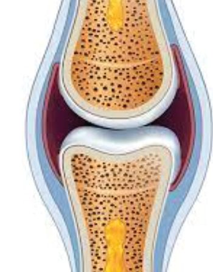
BIOLOGY - IX
5.
Disorders of the bones and muscles are given in column 1 and their causes are given in coloums 2. Analyse them and choose the option including the correct pairs.
Column 1 Column 2 P) Sprain i. Destruction of cartilage by certain defence cells Q) Osteoporosis ii. Changes that occur in genes R) Rheumatoid iii. Stretching or breaking of arthritis ligaments S) Muscular dystrophy iv. Deficiency of protein, calcium and Vitamin D (a) (b) (c) (d)
6.
P – ii , P – iv, P – i, P – iii,
Q - iv, Q - iii, Q - ii, Q - iv,
R - i, R - ii, R - iii, R - i,
S - iii S-i S - iv S - ii
Re-draw the diagram and answer the following questions. (a). Identify the parts mentioned below and label them. i) Fluid present between the bones ii) The part seen at the tip of bones which reduces friction (b). Identify the part labelled as ‘X’ in the diagram and write its function.
X
Extended activities 1.
Collect pictures and information related to the diversity of locomotion in the living world and display them in the class.
2.
Prepare posters indicating the importance of exercise using graphics software and display them in the notice board.
3.
Observe various organisms in your surroundings and record the diversity in their movements in your Science diary. 112